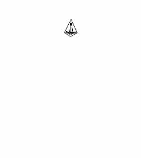

UNUsmon Nosirning poemalar, dramalar va tarjimalardan iborat tanlangan asarlar to'plami.
Ushbu kitob o'zbek shoiri Usmon Nosirning ikki jildlik tanlangan asarlar to'plamining ikkinchi jildi hisoblanadi. Undan shoirning poemalari, dramatik asarlari va tarjimalari o'rin olgan.